우리나라에서 친근한 사이에
‘식사하셨어요?’, ‘어디
가세요?’
같은 일상의 안부를 묻거나 간단한 질문을 하면서 인사를 대신하는
것처럼 중국에도 아는 사람끼리는
你好뿐만
아니라 다양한 표현으로 인사한다. 체면을 중시하는 중국인들은 헤어질
때도 형식적인 인사를 자주 한다. 예를 들어 헤어질 때
‘有时间来我家玩儿
(시간 있을 때 우리 집에 놀러 오세요)!’
라고 인사하면, 실제 방문 의사 여부에 관계없이
‘我一定去
(꼭 갈게요)!’
와 같은 형식적인 대답을 하는 것이 일반적이다.
예시 답안

우리나라에서 친근한 사이에
‘식사하셨어요?’, ‘어디
가세요?’
같은
일상의 안부를 묻거나 간단한 질문을 하면서 인사를 대신하는 것처럼
중국에도 아는 사람끼리는
你好뿐만
아니라 다양한 표현으로 인사
한다. 체면을 중시하는 중국인들은 헤어질 때도 형식적인 인사를
자주 한다. 예를 들어 헤어질 때 ‘有时间来我家玩儿(시간 있을 때
우리 집에 놀러 오세요)!’라고
인사하면, 실제 방문 의사 여부에
관계없이 ‘我一定去(꼭
갈게요)!’와 같은 형식적인 대답을
하는 것이
일반적이다.